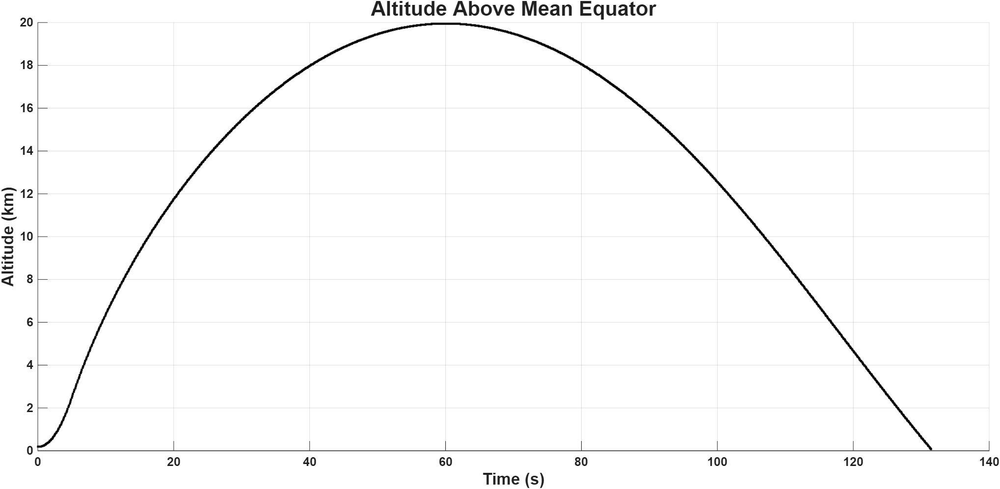
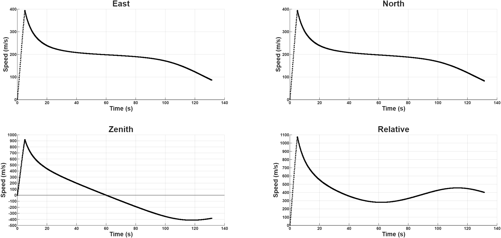
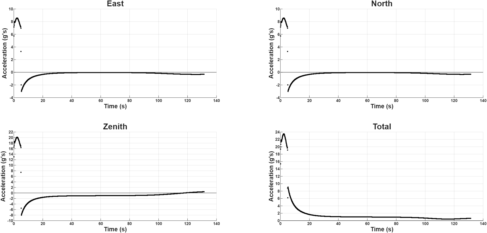
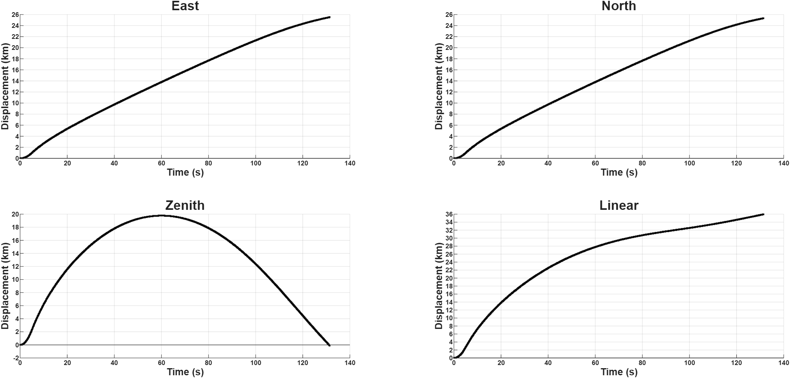
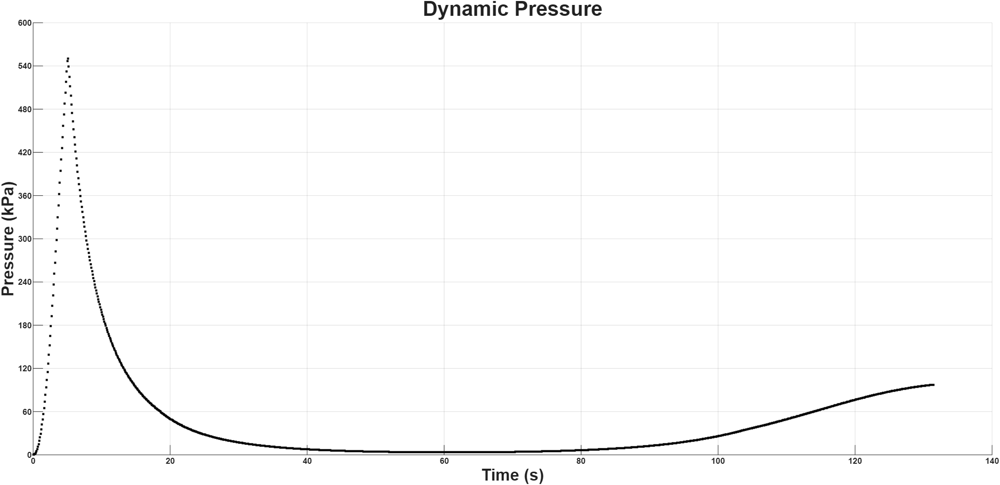
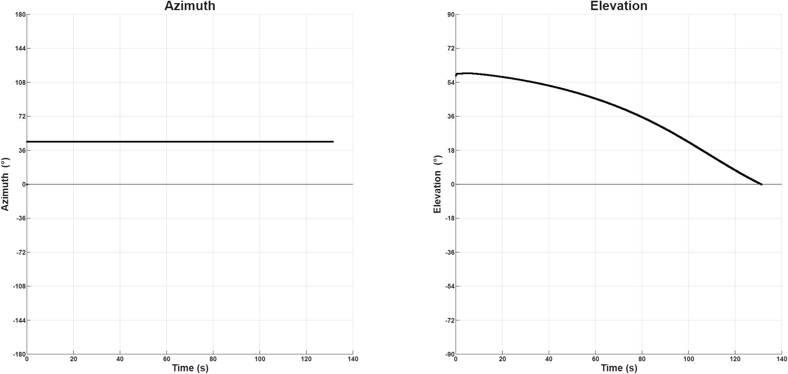

Project BlueSpear
A long-term high-altitude rocket project focused on developing a detailed trajectory simulation capability. My main role is serving as Navigation Team Lead, where I direct the team responsible for modeling the vehicle trajectory and producing simulation data for other project teams.
Project Overview
Project BlueSpear is a long-term student aerospace project focused on developing a high-altitude rocket system. Within the project, the Navigation team is responsible for creating the vehicle trajectory model and generating simulation data that can inform decisions made by the structures, propulsion, aerodynamics, controls, and recovery teams.
Our long-term goal is to develop a highly detailed six-degree-of-freedom trajectory model of the vehicle. This model will eventually be used to study the vehicle’s motion, flight environment, performance, and sensitivity to design changes. We are currently starting with a simpler three-degree-of-freedom trajectory model as a foundation before expanding into a higher-fidelity simulation.
My Role: Navigation Team Lead
My main contribution to Project BlueSpear is serving as the Navigation Team Lead. In this role, I help direct the team responsible for developing the rocket trajectory simulation. This includes defining the simulation approach, organizing technical tasks, helping guide model development, reviewing outputs, and making sure our work produces useful data for the rest of the project.
The Navigation team’s work is important because trajectory data affects many other design decisions. Predicted altitude, velocity, acceleration, dynamic pressure, flight angles, and position history can influence propulsion sizing, structural loading, aerodynamic design, recovery planning, and safety analysis.
Leadership Responsibilities
- Directing the team developing the vehicle trajectory model
- Breaking the simulation effort into manageable technical tasks
- Helping guide the transition from a 3DOF model toward a 6DOF model
- Coordinating simulation outputs for use by other project teams
- Reviewing plots and results to identify issues or next steps
Technical Responsibilities
- Developing trajectory simulation logic
- Modeling gravity, atmosphere, thrust, mass, drag, and vehicle motion
- Interpreting altitude, velocity, acceleration, dynamic pressure, and angle outputs
- Planning future model upgrades toward higher-fidelity 6DOF simulation
- Using simulation data to support design decision-making
Current 3DOF Simulation Model
The current Navigation team simulation is a three-degree-of-freedom trajectory model. It is intended to serve as a baseline model that can be expanded as the vehicle design matures. The current model includes gravity, a simple atmosphere, drag, and time-dependent thrust and mass profiles.
Since the final Project BlueSpear motor design has not yet been finalized, the current simulation uses the thrust profile of the Cesaroni 40960O8000-P motor from ThrustCurve.org as a stand-in. This allows the team to begin testing the trajectory model structure and generating preliminary outputs before the final propulsion configuration is selected.
For the current simulation output shown below, the vehicle is modeled as a sphere with a drag coefficient of 0.5, a radius of 0.05 meters, and an initial wet mass of 40 kilograms. These simplified assumptions allow the team to test the numerical framework before adding more detailed geometry, aerodynamics, mass properties, and attitude dynamics.
Current Model Inputs
- Three-degree-of-freedom trajectory model
- Gravity model
- Simple atmospheric model
- Time-dependent thrust profile
- Time-dependent mass profile
- Drag modeled using a simplified spherical vehicle approximation
Current Vehicle Assumptions
- Vehicle modeled as a sphere
- Drag coefficient: 0.5
- Radius: 0.05 m
- Initial wet mass: 40 kg
- Stand-in motor: Cesaroni 40960O8000-P
- Motor data source: ThrustCurve.org
Trajectory Simulation Outputs
The following plots show the current output of the Navigation team’s 3DOF trajectory model. These plots are used to evaluate the simulated flight profile and understand how the vehicle state changes over time. As the simulation matures, these outputs will help the team compare design iterations and provide useful trajectory data to other subsystems.

Altitude history from the current 3DOF trajectory simulation.

Velocity component history showing east, north, zenith, and relative speed over time.

Acceleration component history showing east, north, zenith, and total acceleration over time.

Position displacement history showing east, north, zenith, and total linear displacement.

Dynamic pressure history used to understand aerodynamic loading trends during flight.

Azimuth and elevation history from the simulated trajectory.
Technical Approach
The current technical approach is to begin with a simplified but functional trajectory model, verify that the core logic behaves reasonably, and then gradually increase model fidelity. Starting with a 3DOF model allows the team to focus on translational motion, thrust, mass variation, drag, gravity, and atmosphere modeling before adding attitude dynamics and full six-degree-of-freedom behavior.
The long-term 6DOF model will require additional development, including vehicle attitude states, rotational equations of motion, aerodynamic moments, mass moment of inertia, center-of-gravity tracking, control inputs, and more detailed environmental models. The current 3DOF model gives the team a working base that can be validated and expanded over time.
Current 3DOF Focus
- Translational equations of motion
- Time-varying thrust profile
- Time-varying mass profile
- Simple atmospheric density model
- Drag force estimation
- Altitude, velocity, acceleration, and dynamic pressure outputs
Future 6DOF Expansion
- Vehicle attitude dynamics
- Rotational equations of motion
- Aerodynamic force and moment modeling
- Inertia tensor and center-of-gravity tracking
- Control input modeling
- Higher-fidelity trajectory and design sensitivity studies
Skills Used and Developed
Technical Skills
- Trajectory simulation
- Three-degree-of-freedom modeling
- Six-degree-of-freedom model planning
- Equations of motion development
- Gravity, atmosphere, thrust, mass, and drag modeling
- Dynamic pressure analysis
- Simulation plotting and interpretation
Leadership and Engineering Skills
- Navigation team leadership
- Technical task planning
- Simulation architecture planning
- Subsystem communication
- Design-data support for other teams
- Iterative model development
- Technical documentation and review
Selected Contributions
My Project BlueSpear work demonstrates both technical and leadership experience. As Navigation Team Lead, I am helping guide the development of a trajectory simulation capability that the larger project can use to support design decisions. The current 3DOF model is an important first step toward a more detailed 6DOF simulation.
Navigation Team Contributions
- Directed early trajectory simulation development
- Helped define the team’s modeling path from 3DOF to 6DOF
- Organized simulation outputs for review and communication
- Connected trajectory modeling work to broader vehicle design needs
Simulation Contributions
- Supported development of a baseline 3DOF vehicle trajectory model
- Incorporated gravity, atmosphere, drag, thrust, and mass variation
- Used a real thrust profile as a stand-in motor input
- Generated and interpreted trajectory plots for altitude, velocity, acceleration, pressure, position, and flight angles
What I Learned
This project has reinforced that trajectory modeling is not just about predicting where the vehicle goes. The simulation must provide useful engineering data that other teams can use to make design decisions. Altitude, velocity, dynamic pressure, acceleration, and flight angle outputs can all influence subsystem requirements and vehicle design tradeoffs.
It has also shown me the value of starting simple and building up model fidelity over time. A 3DOF simulation provides a manageable first step, while the planned 6DOF model will require a deeper treatment of vehicle attitude, aerodynamic moments, mass properties, and rotational dynamics.
Future Improvements
Future Navigation team work will focus on expanding the model from the current 3DOF baseline toward a detailed 6DOF simulation. Planned improvements include better atmospheric modeling, higher-fidelity aerodynamic properties, finalized motor data, changing center of gravity, inertia tensor modeling, attitude dynamics, aerodynamic moments, control inputs, and more detailed validation of the simulation results.